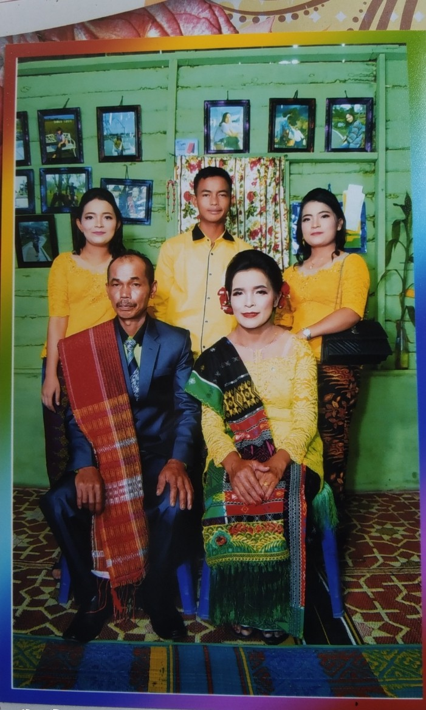
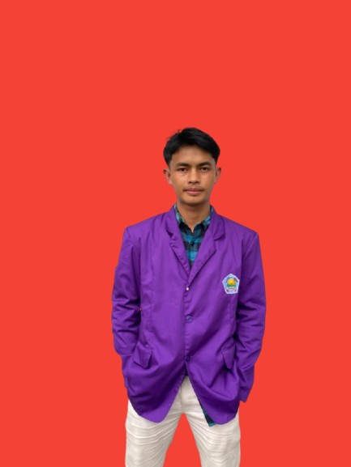

Moments & Archives.
Kumpulan memori bersama pacar, keluarga, dan kegiatan saya.
The One
Dewi Sirait

The Roots
Big Family



"Defining my own path through consistency and passion."
Lahir di Sidikalang, saya membawa semangat yang sama kerasnya dengan tekad saya. Bagi saya, kehidupan adalah tentang bagaimana kita memberikan dampak bagi orang sekitar.
Setiap hari adalah lembaran baru dalam sebuah mahakarya yang sedang saya tulis sendiri.
Life Experiences
Discipline & Teamwork
Kumpulan memori bersama pacar, keluarga, dan kegiatan saya.

Mendalami peran dalam [Detail Kegiatan].